품질경영기사 (2018-03-04 기출문제)
1과목: 실험계획법
1. A1, A2,A3에 관한 대비 L = C1A1+C2A2+C3A3에서 제곱합(SL)은? (단,
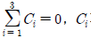
가 모두 0은 아니며, γ은 요인 A의 각 수준에서의 반복수이다.)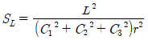
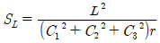
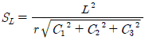
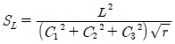
(정답률: 76%)

2. 실험계획법에 의해 얻어진 데이터를 분산분석하여 통계적 해석을 할 때에는 측정치의 오차항에 대해 크게 4가지의 가정을 하는데, 이 가정에 속하지 않는 것은?
- 독립성
- 정규성
- 랜덤성
- 등분산성
(정답률: 79%)
3. 23형의
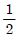
일부실시법에 의한 실험을 하기 위해 다음의 블록을 설정하여 실험을 실시하려 할 때의 설명으로 틀린 것은?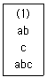
- 위 블록은 주블록이다.
- 요인 A는 교호작용 B×C와 교락되어 있다.
- 요인 A의 효과는
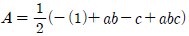
이다. - 주요인이 서로 교락되므로 블록을 재설계하여 실험하는 것이 좋다.
(정답률: 70%)
4. 5수준의 모수요인 A와 4수준의 모수요인 B로 반복 없는 2요인실험을 한 결과 주효과 A, B가 모두 유의한 경우 최적조합조건하에서의 공정평균을 추정할 때 유효 반복수 ne는 얼마인가?
- 2.5
- 2.9
- 4
- 3
(정답률: 75%)
5. 1요인실험의 분산분석을 실시하기 위해 총 제곱합(ST)을 요인 A의 제곱합(SA)과 오차 제곱합(Se)으로 분해하고자 할 때, 계산식으로 틀린 것은? (단, xij는 i번째 수준의 j번째 반복에서 측정된 특성치이며, 고려된 수준수는 l(l ＞ 0) 그리고, 반복수 m(m ＞ 0)이다.)
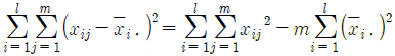
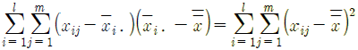
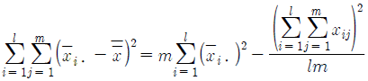
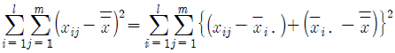
(정답률: 36%)
6. 혼합모형 반복 없는 2요인실험에서 모두 유의하다면 구할 수 없는 것은?
- 오차의 산포
- 모수인자의 효과
- 변량인자의 산포
- 교호작용의 효과
(정답률: 74%)
7. 망소특성 실험의 경우 다음과 같은 데이터를 얻었다. 이 때 SN 비(signal-to-noise ratio)는 약 몇 데시벨인가?
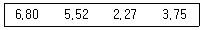
- -13.80
- -10.97
- 7.27
- 9.28
(정답률: 76%)
8. 수준이 k인 그레코라틴방격법의 오차의 자유도는?
- (k－1)
- (k－1)(k－2)
- (k－1)(k－3)
- (k－1)(k－4)
(정답률: 71%)
9. 다음의 구조를 갖는 단일분할법에서 사용되는 계산이 틀린 것은? (단, 요인 A, B, C 모두 모수요인이고, 각 수준수는 l, m, n이다.)(오류 신고가 접수된 문제입니다. 반드시 정답과 해설을 확인하시기 바랍니다.)
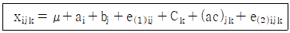
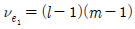
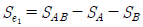
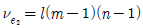
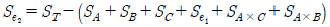
(정답률: 62%)
10. 반복이 있는 2요인실험에서 요인 A는 모수이고, 요인 B는 대응이 있는 변량일 때의 검정방법으로 맞는 것은?
- A, B, A×B는 모두 오차분산으로 검정한다.
- A와 A×B는 오차분산으로 검정하고, B는 A×B로 검정한다.
- B와 A×B는 오차분산으로 검정하고, A는 A×B로 검정한다.
- A와 B는 A×B로 검정하고, A×B는 오차분산으로 검정한다.
(정답률: 50%)
11. 적합품을 0, 부적합품을 1로 표시한 0, 1의 데이터 해석에서 각 조합마다 각각 100회씩 되풀이한 결과는 표와 같았다. 제곱합 ST는 약 얼마인가?
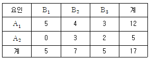
- 2.97
- 7.37
- 16.52
- 53.37
(정답률: 74%)
12. 4수준, 4반복의 1요인실험을 회귀분석 하고자 한다. Sxx＝3.20, Sxy＝3.40, Syy＝4.6981일 때, 회귀에 기인하는 불편분산(VR)은 약 얼마인가?
- 1.063
- 1.806
- 2.461
- 3.613
(정답률: 44%)
13. 분산성분을 조사하기 위하여 A는 3일을 랜덤하게 선택한 것이고, B는 각 일별로 2대의 트럭을 랜덤하게 선택한 것이고, C는 각 트럭 내에서 랜덤하게 2삽을 취한 것이다. 각 삽에서 2번에 걸쳐 소금의 염도를 측정하는 지분실험법을 실시하였다. 오차의 자유도는 얼마인가?
- 6
- 12
- 23
- 24
(정답률: 74%)
14. 수준수가 4, 반복 5회인 1요인실험의 분산분석 결과 요인 A가 유의수준 5%에서 유의적이었다. ST＝2.478, SA＝1.690이었고,
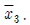
＝8.50일 때, μ(A3)를 유의수준 0.⑤로 구간 추정하면 약 얼마인가? (단, t0.975(16)＝2.120, t0.95(16)＝1.746이다.)- 8.290≤μ(A3)≤8.710
- 8.265≤μ(A3)≤8.735
- 8.306≤μ(A3)≤8.694
- 8.327≤μ(A3)≤8.673
(정답률: 62%)
15. 실험계획의 기본원리 중 블록화의 원리에 대한 설명으로 틀린 것은?
- 대표적인 실험계획법은 지분실험법이다.
- 블록을 하나의 요인으로 하여 그 효과를 별도로 분리하게 된다.
- 실험의 환경을 될 수 있는 한 균일한 부분으로 쪼개어 여러 블록으로 만든다.
- 실험전체를 시간적 혹은 공간적으로 분할하여 블록을 만들어 주면 정도 좋은 결과를 얻을 수 있다.
(정답률: 45%)
16. 반복이 없는 모수모형의 3요인실험 분산분석 결과 A, B, C 주효과만 유의한 경우, 3요인의 수준조합에서 신뢰구간 추정 시 유효반복수를 구하는 식은? (단, 요인 A, B, C의 수준수는 각각 l, m, n이다.)
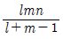
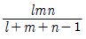
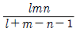
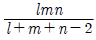
(정답률: 57%)
17. 3수준계 선점도에 관한 설명으로 틀린 것은?
- 선점도를 사용할 때 3요인 교호작용은 선점도에 나타나지 않는다.
- 3수준계의 선점도는 주요인의 배정은 선에하고, 교호작용의 배정은 점에 한다.
- 가장 할당이 작은 것은 L9(34)형 선점도로 오직 1가지이며, 교호작용을 고려하면 요인은 최대 2개밖에 할당할 수 없다.
- 할당되지 않고 남는 점이나 선은 오차항으로 활용되므로 가급적 불필요한 교호작용이나 관련 없는 요인을 억지로 할당하지 않도록 한다.
(정답률: 49%)
18. 23형 교락법 실험에서 A×B효과를 블록과 교락시키고 싶은 경우 실험을 어떻게 배치해야 하는가?
- 블록 1：a, ab, ac, abc, 블록 2：(1), b, c, bc
- 블록 1：b, ab, bc, abc, 블록 2：(1), a, c, ac
- 블록 1：(1), ab, ac, bc, 블록 2：a, b, c, abc
- 블록 1：(1), ab, c, abc, 블록 2：a, b, ac, bc
(정답률: 73%)
19. 표는 L4(23)형 직교배열표에 A, B 두 요인을 배치하여 실험한 결과이다. 요인 A의 제곱합 SA는 얼마인가?
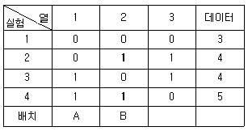
- 1
- 2
- 4
- 8
(정답률: 61%)
20. 요인배치법에 대한 설명 중 틀린 것은?
- 22형 요인실험은 2요인의 영향을 계산하는데 이용된다.
- 반복이 있는 22형 요인실험에서 교호작용에 대한 정보를 얻을 수 있다.
- 실험을 반복하면 일반적으로 오차항의 자유도가 커져서 검출력이 증가한다.
- Pm×Gn요인실험은 요인의 수가 m × n개이고, 요인의 수준수가 P+G개다.
(정답률: 49%)
2과목: 통계적품질관리
21. 어떤 모집단의 평균이 기존에 알고 있는 모평균보다 큰지를 알아보려고 하는데, 모표준편차 값을 모르고 있다. 이에 대해 검정한 결과 귀무가설이 기각되었다면, 새로운 모평균의 신뢰한계를 구하는 추정식으로 맞는 것은?
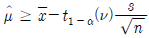
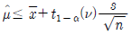
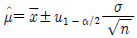
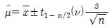
(정답률: 36%)
22. 500개가 1로트로 취급되고 있는 어떤 제품이 있다. 그 중 490개는 적합품, 10개는 부적합품이다. 부적합품 중 5개는 각각 1개씩의 부적합을 지니고 있으며, 4개는 각각 2개씩의 부적합, 그리고 1개는 3개의 부적합을 지니고 있다. 이 로트의 100 아이템당 부적합 수는 얼마인가?
- 1.6
- 3.2
- 4.9
- 10.0
(정답률: 46%)
23. 로트의 품질표시 방법이 아닌 것은?
- 로트의 범위
- 로트의 표준편차
- 로트의 평균값
- 로트의 부적합품률
(정답률: 64%)
24. 직물공장의 권취공정에서 사절건수는 10000m 당 평균 16회 이었다. 작업방법을 변경하여 운전하였더니 사절건수가 10000m 당 9회로 나타났다. 작업방법 변경 후 사절건수가 감소하였다고 할 수 있는지 유의수준 0.⑤로 검정한 결과로 맞는 것은?
- 이 자료로는 검정할 수 없다.
- H0 채택, 즉 감소했다고 할 수 없다.
- H0 채택, 즉 달라졌다고 할 수 없다.
- H0 기각, 즉 감소했다고 할 수 있다.
(정답률: 59%)
25. 제2종 오류를 범할 확률에 해당하는 것은?
- 공정이 관리상태일 때, 관리상태라고 판단할 확률
- 공정이 관리상태가 아닐 때, 관리상태라고 판단할 확률
- 공정이 관리상태일 때, 관리상태가 아니라고 판단할 확률
- 공정이 관리상태가 아닐 때, 관리상태가 아니라고 판단할 확률
(정답률: 64%)
26. 관리계수(Cf)와 군간변동(σb)에 대한 설명 중 틀린 것은?
- 관리계수 Cf ＜ 0.8이면 군구분이 나쁘다.
- 완전한 관리상태에서는 군간변동(σb)은 대략 1이 된다.
- 관리계수 0.8 ＜ Cf ＜ 1.2이면 대체로 관리상태에 있다고 볼 수 있다.
- 군간변동(σb)이 클수록
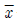
관리도에서 관리한계를 벗어나는 점이 많아지게 된다.
(정답률: 63%)
27. 계수치 축차 샘플링 검사방식(KS Q ISO 8422：2009)에서 PR(CRQ)이 뜻하는 내용으로 맞는 것은?
- 합격시키고 싶은 로트의 부적합품률의 하한
- 합격시키고 싶은 로트의 부적합품률의 상한
- 불합격시키고 싶은 로트의 부적합품률의 하한
- 불합격시키고 싶은 로트의 부적합품률의 상한
(정답률: 49%)
28. 다음은 부분군의 크기와 부적합품수에 대해 9회에 걸쳐 측정한 자료표이다. 이 자료에 적용되는 관리도의 중심선은 약 얼마인가?
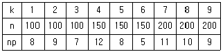
- 5.85%
- 5.95%
- 6.⑤%
- 6.15%
(정답률: 38%)
29. 기준값이 주어지는 경우의 관리도에 대한 설명으로 틀린 것은?
- 기준값이 주어지는 경우의 관리도는 계수치 관리도에 적용할 수 없다.
- 공정의 상태가 변했다고 판단될 경우 관리한계를 수정하는 것이 바람직하다.
- 기준값이 주어지지 않은 경우의 관리도가 관리상태일 때 중심값을 기준값으로 사용할 수 있다.
- 기준값이 주어지는 경우의 관리도는 부분군의 데이터를 얻을 때마다 관리도에 점을 타점 하여 이상유무를 판단한다.
(정답률: 63%)
30. 정규 모집단으로부터 n＝15의 랜덤샘플을 취하여
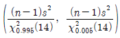
에 의거, 신뢰구간 (0.0691, 0.531)을 얻었을 때의 설명으로 맞는 것은?- 모집단의 99%가 이 구간 안에 포함된다.
- 모평균이 이 구간 안에 포함될 신뢰율이 99%이다.
- 모분산이 이 구간 안에 포함될 신뢰율이 99%이다.
- 모표준편차가 이 구간 안에 포함될 신뢰율이 99%이다.
(정답률: 64%)
31. 통계량의 점추정치에 관한 조건에 해당하지 않는 것은?
- 유효성(efficiency)
- 일치성(consistency)
- 랜덤성(randomness)
- 불편성(unbiasedness)
(정답률: 61%)
32. 계수샘플링 검사에 있어서 N, n, C가 주어지고, 로트의 부적합품률 P와 L(P)의 관계를 나타낸 것을 무엇이라고 하는가?
- 검사일보
- 검사성적서
- 검사특성곡선
- 검사기준서
(정답률: 69%)
33. 그림에서 회귀관계로 설명이 되지 않는 편차를 나타내는 부분은?
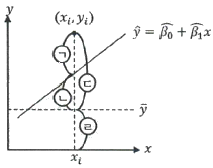
- ㉠
- ㉡
- ㉢
- ㉣
(정답률: 57%)
34. 지수가중 이동평균(EWMA) 관리도의 설명 중 맞는 것은?
- V－마스크를 이용하여 공정의 이상상태를 판정한다.
- 이동평균관리도와 달리 최근의 데이터일수록 가중치를 높게 둔다.
- 관리한계는 부분군의 수가 증가할수록 점점 좁아져서 검출력이 증가한다.
- 공정의 군내변동이 점진적으로 증가하는 상황을 민감하게 검출하는데 효과적이다.
(정답률: 44%)
35. 모집단으로부터 4개의 시료를 각각 뽑은 결과의 분포가 X1~N(5, 82), X2~N(25, 42)X1이고, Y = 3X1-2X2일 때, Y의 분포는 어떻게 되겠는가? (단, X1, X2는 서로 독립니다.)
- Y∼ N(-35, √160)2
- Y∼ N(-35, √224)2
- Y∼ N(-35, √512)2
- Y∼ N(-35, √640)2
(정답률: 49%)
36. 어떤 확률변수 X의 값이 그 모평균 μ로부터 3σ이내의 범위에 드는 확률을 체비쉐프(Chebyshev)의 식으로 정의할 때 맞는 것은?
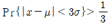
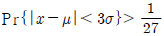
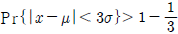
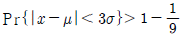
(정답률: 56%)
37. A, B 두 사람의 작업자가 동일한 기계부품의 길이를 측정한 결과 다음과 같은 데이터가 얻어졌다. A 작업자가 측정한 것이 B 작업자의 측정치보다 크다고 할 수 있겠는가? (단, α ＝0.⑤, t0.95(5)＝2.015이다.)
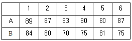
- 데이터가 7개 미만이므로 위험률 5%로는 검정할 수가 없다.
- A 작업자가 측정한 것이 B 작업자의 측정치보다 크다고 할 수 있다.
- A 작업자가 측정한 것이 B 작업자의 측정치보다 크다고 할 수 없다.
- 위의 데이터로는 시료크기가 7개 이하이므로 귀무가설을 채택하기에 무리가 있다.
(정답률: 54%)
38. 샘플링방법에 관한 설명으로 틀린 것은?
- 집락샘플링은 로트 간 산포가 크면 추정의 정밀도가 나빠진다.
- 층별샘플링은 로트 내 산포가 크면 추정의 정밀도가 나빠진다.
- 사전에 모집단에 대한 정보나 지식이 없을 경우 단순랜덤샘플링이 적당하다.
- 2단계 샘플링은 단순랜덤샘플링에 비해 추정의 정밀도가 우수하고, 샘플링 조작이 용이하다.
(정답률: 59%)
39. 다음 표는 주사위를 60회 던져서 1부터 6까지의 눈이 몇 회 나타나는가를 기록한 것이다. 이 주사위에 관한 적합도 검정을 하고자 할 때, 검정통계량
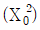
은 얼마인가?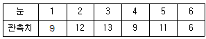
- 1.9
- 2.5
- 3.2
- 4.5
(정답률: 47%)
40. 계량 규준형 1회 샘플링검사에서 모집단의 표준편차를 알고 특성치가 낮을수록 좋은 경우, 로트의 평균치를 보증하려고 할 때 합격되는 경우는?
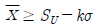
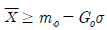
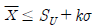
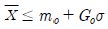
(정답률: 50%)
3과목: 생산시스템
41. 표준시간 설정을 위한 수행도평가 방법에 해당하지 않는 것은?
- 속도평가법
- 라인밸런싱법
- 객관적평가법
- 평준화법(Westinghouse 시스템)
(정답률: 62%)
42. JIT 생산방식에 관한 설명으로 틀린 것은?
- 생산의 평준화를 추구한다.
- 프로젝트 생산방식에 적합하다.
- 간판을 활용한 pull 생산방식이다.
- 생산준비시간의 단축이 필요하다.
(정답률: 57%)
43. 자주보전 활동 7스텝 중 “설비의 기능구조를 알고 보전기능을 몸에 익힌다.”는 내용은 어디에 해당하는가?
- 1스텝：초기청소
- 2스텝：발생원·곤란개소 대책
- 3스텝：청소·급유·점검기준 작성
- 4스텝：총점검
(정답률: 49%)
44. 총괄생산계획(APP) 기법 중 시행착오의 방법으로 이해하기 쉽고, 사용이 간편한 것은?
- 도시법
- 탐색결정기법
- 선형계획법
- 휴리스틱기법
(정답률: 47%)
45. PERT 기법에서 최조시간(TE；earliest possible time)과 최지시간(TL；latest allowable time)의 계산방법으로 맞는 것은?
- TE, TL 모두 전진계산
- TE, TL 모두 후진계산
- TE는 전진계산, TL은 후진계산
- TE는 후진계산, TL은 전진계산
(정답률: 69%)
46. 연간 10000단위 수요가 있으며 생산준비 비용이 회당 2000원, 재고유지비용이 연간 단위당 100원일 때, 연간 생산율이 20000 단위라면 경제적 생산량은 약 몇 단위인가?
- 525단위
- 633단위
- 759단위
- 895단위
(정답률: 39%)
47. 공급사슬에서 고객으로부터 생산자로 갈수록 주문량의 변동폭이 증가되는 현상을 무엇이라 하는가?
- 상쇄효과
- 채찍효과
- 물결효과
- 학습효과
(정답률: 62%)
48. 보전작업자가 각 제조부서의 감독자 밑에 있는 보전조직을 무엇이라고 하는가?
- 부문보전
- 집중보전
- 지역보전
- 절충보전
(정답률: 59%)
49. 불확실성하에서의 의사결정 기준에 대한 설명으로 틀린 것은?
- Laplace 기준：가능한 성과의 기대치가 가장 큰 대안을 선택
- MaxiMin 기준：가능한 최소의 성과를 최대화하는 대안을 선택
- Hurwicz 기준：기회손실의 최대값이 최소화되는 대안을 선택
- MaxiMax 기준：가능한 최대의 성과를 최대화하는 대안을 선택
(정답률: 51%)
50. 스톱워치에 의한 시간연구에서 관측대상 작업을 여러 개의 요소작업으로 구분하여 시간을 측정하는 이유에 해당하지 않는 것은?
- 같은 유형의 요소작업 시간자료로부터 표준자료를 개발할 수 있다.
- 요소작업을 명확하게 기술함으로써 작업내용을 보다 정확하게 파악할 수 있다.
- 모든 요소작업의 여유율을 동일하게 부여하여 여유시간을 정확하게 구할 수 있다.
- 작업방법이 변경되면 해당되는 부분만 시간연구를 다시 하여 표준시간을 쉽게 조정할 수 있다.
(정답률: 50%)
51. 동작경제의 원칙 중 공구 및 설비의 설계에 관한 원칙에 해당하지 않는 것은?
- 공구와 자재는 가능한 한 사용하기 쉽도록 미리 위치를 잡아준다.
- 공구류는 작업의 전문성에 따라서 될 수 있는 대로 단일 기능의 것을 사용해야 한다.
- 각 손가락이 서로 다른 작업을 할 때에는 작업량을 각 손가락의 능력에 맞게 분배해야 한다.
- 발로 조작하는 장치를 효과적으로 사용할 수 있는 작업에서는 이러한 장치를 활용하여 양손이 다른 일을 할 수 있도록 한다.
(정답률: 55%)
52. 분산구매의 장점이 아닌 것은?
- 자주적 구매가 가능하다.
- 긴급수요의 경우 유리하다.
- 가격이나 거래조건이 유리하다.
- 구매수속이 간단하여 신속하게 처리할 수 있다.
(정답률: 59%)
53. 주문생산 시스템에 관한 내용으로 맞는 것은?
- 생산의 흐름은 연속적이다.
- 소품종 대량생산에 적합하다.
- 다품종 소량생산에 적합하다.
- 동일 품목에 대하여 반복생산이 쉽다.
(정답률: 62%)
54. 다음의 자료를 보고 우선순위에 의한 긴급율법으로 작업순서를 정한 것으로 맞는 것은?
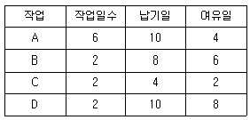
- A－C－B－D
- A－B－C－D
- D－C－B－A
- D－B－C－A
(정답률: 50%)
55. 다음 ( )안에 알맞은 용어는?
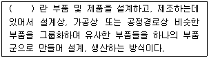
- GT
- FMS
- SLP
- QFD
(정답률: 64%)
56. 생산시스템 운영에서 생산계획을 수립하기 위한 기초 자료는?
- 작업능력검토
- 제품수요의 예측
- 재고의 수준검토
- 제품 품질수준 검토
(정답률: 54%)
57. 어느 작업자의 시간연구결과 평균작업시간이 단위당 20분이 소요되었다. 작업자의 레이팅 계수는 95%이고, 여유율은 정미시간의 10%일 때, 외경법에 의한 표준시간은 얼마인가?
- 14.5분
- 16.4분
- 18.1분
- 20.9분
(정답률: 51%)
58. 설비배치의 일반적인 목적과 가장 거리가 먼 것은?
- 설비 및 인력의 증대
- 운반 및 물자취급의 최소화
- 안전확보와 작업자의 직무만족
- 공정의 균형화와 생산흐름의 원활화
(정답률: 56%)
59. 다음의 MRP(Material Requirements Planning) 특징으로 맞는 것을 모두 선택한 것은?
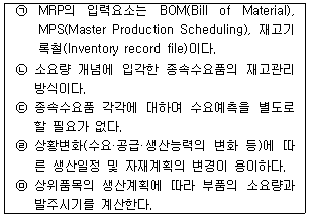
- ㉡, ㉢, ㉣, ㉤
- ㉠, ㉡, ㉢, ㉤
- ㉠, ㉡, ㉣, ㉤
- ㉠, ㉡, ㉢, ㉣, ㉤
(정답률: 51%)
60. 다음의 표는 Taylor, Ford 그리고 Mayo 시스템을 비교한 것이다. 내용 중 틀린 것은?
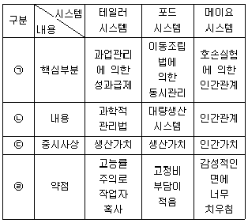
- ㉠
- ㉡
- ㉢
- ㉣
(정답률: 52%)
4과목: 신뢰성관리
61. Y 전자부품의 수명은 전압에 대하여 5승 법칙에 따른다. 전압을 정상치보다 30% 증가시켜 가속수명시험을 하여 얻은 데이터로부터 추정한 평균수명은 정상수명 시험에서 얻은 데이터로부터 추정한 평균 수명에 비해 약 얼마나 단축되는가?
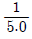
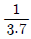
(정답률: 45%)
62. 그림과 같은 FT 도에서 정상사상(Top Event)의 고장확률은 약 얼마인가? (단, 기본사상 a, b, c의 고장확률은 각각 0.2, 0.3, 0.4이다.)
- 0.0312
- 0.0600
- 0.4400
- 0.4848
(정답률: 40%)
63. 다음은 어떤 전자장치의 보전시간을 집계한 표이다. MTTR의 추정치는 약 몇 시간인가?
- 1
- 2
- 3
- 4
(정답률: 47%)
64. 정시중단시험에서 고장개수가 0개인 경우 어떠한 분포를 이용하여 평균수명을 구하는 가?
- 정규분포
- 초기하분포
- 이항분포
- 푸아송분포
(정답률: 49%)
65. λ1＝0.001, λ2＝0.001인 두 부품으로 구성된 직렬시스템에서 t＝100일 때, 시스템의 신뢰도(R), 고장률(λ), MTTF은 각각 약 얼마인가? (단, 고장은 지수분포를 따른다.)
- R＝0.8187, λ＝0.002, MTTF＝500
- R＝0.8187, λ＝0.001, MTTF＝1000
- R＝0.9048, λ＝0.002, MTTF＝500
- R＝0.9048, λ＝0.000001, MTTF＝1000000
(정답률: 50%)
66. 지수분포를 따르는 어떤 기기의 고장률은 0.02/시간이고, 이 기기가 고장나면 수리하는 데 소요되는 평균시간이 30시간이라면, 이 기기의 가용도(Availability)는 몇 %인가?
- 37.5
- 50.0
- 62.5
- 80.0
(정답률: 51%)
67. 고장평점법에서 평점요소로 기능적 고장영향의 중요도(C1), 영향을 미치는 시스템의 범위(C2), 고장발생빈도(C3)를 평가하여 평가점을 C1＝3, C2＝9, C3＝6을 얻었다면, 고장평점(Cs)는 약 얼마인가?
- 4.45
- 5.45
- 8.72
- 12.72
(정답률: 44%)
68. 신뢰성보증시험에서 계량형 특성을 갖는 자료를 분석하는 데 주로 사용되는 수명분포는?
- 지수분포
- 초기하분포
- 이항분포
- 베르누이분포
(정답률: 51%)
69. 고장분포함수가 지수분포인 n개의 부품의 고장시간이 t1, t2, ..., tn으로 얻어졌다. 평균고장시간(MTBF)에 대한 추정식으로 맞는 것은?
- t1/n
- tn/n
(정답률: 57%)
70. 300개의 전구로 구성된 전자제품에 대하여 수명시험을 한 결과 4시간과 6시간 사이의 고장개수가 20개이다. 4시간에서 이 전구의 고장확률밀도함수 f(t)는 약 얼마인가?
- 0.0333/시간
- 0.0367/시간
- 0.0433/시간
- 0.0457/시간
(정답률: 45%)
71. 고장률 λ를 가지는 리던던시 시스템을 그림과 같이 병렬로 구성하였을 때 신뢰도 함수R(t)는? (단, 각각의 부품은 동일한 고장률을 갖는 지수분포를 따른다.)
- 2e-λt-e-2λt
(정답률: 42%)
72. 신뢰성 데이터 해석에 사용되는 확률지 중 가장 널리 사용되는 와이블 확률지에 대한 설명으로 틀린 것은?
- E(t)는 으로 계산한다.
- F(t)는 로 계산한 값을 타점한다.
- 모수 m의 추정은 의 값이다.
- η의 추정은 타점의 직선이 F(t)＝63%인 선과 만나는 점의 하측 눈금(t 눈금)을 읽은 값이다.
(정답률: 45%)
73. 10개의 샘플에 대하여 4개가 고장날 때까지 수명시험을 한 결과 10시간, 20시간, 30시간, 40시간에 각각 1개씩 고장이 났다. 이 샘플의 고장이 지수분포에 따라 발생한다고 하면 MTBF의 점추정치는 몇 시간인가?
- 25시간
- 34시간
- 85시간
- 100시간
(정답률: 37%)
74. 각 요소의 신뢰도가 0.9인 2 out of 3 시스템(3중 2시스템)의 신뢰도는 약 얼마인가?
- 0.85
- 0.95
- 0.97
- 0.99
(정답률: 44%)
75. 다음은 신뢰성 설계항목에 관한내용으로 신뢰성 설계 순서를 나열한 것으로 맞는 것은?
- ㉠ → ㉡ → ㉢ → ㉣ → ㉤ → ㉥
- ㉠ → ㉡ → ㉤ → ㉣ → ㉢ → ㉥
- ㉡ → ㉠ → ㉣ → ㉢ → ㉤ → ㉥
- ㉡ → ㉤ → ㉠ → ㉢ → ㉣ → ㉥
(정답률: 48%)
76. 어떤 부품을 신뢰수준 90%, C＝1에서 λ1＝1%/103 시간임을 보증하기 위한 계수 1회 샘플링검사를 실시하고자 한다. 이때 시험시간 t를 1000시간으로 할 때, 샘플수는 몇 개인가? (단, 신뢰수준은 90%로 한다.)
- 79
- 195
- 390
- 778
(정답률: 46%)
77. 마모고장 기간에 나타나는 고장 원인이 아닌 것은?
- 마모
- 부식
- 피로
- 불충분한 번인
(정답률: 56%)
78. 어떤 재료에 가해지는 부하의 분포는 평균 1500kg/mm2, 표준편차 30kg/mm2인 정규분포를 따르고, 사용재료의 강도의 분포는 평균 1600kg/mm2, 표준편차 40kg/mm2인 정규분포를 따른다. 이 재료의 신뢰도는 약 얼마인가?
- 68.27%
- 95.46%
- 97.72%
- 99.73%
(정답률: 54%)
79. 어떤 제품의 수명이 평균 450시간, 표준편차 50시간의 정규분포에 따른다고 한다. 이 제품 200개를 새로 사용하기 시작하였다면 지금부터 500~600시간 사이에서는 평균 약 몇 개가 고장나는가?
- 30개
- 32개
- 91개
- 100개
(정답률: 46%)
80. 일반적인 신뢰성 시험의 평균수명시험을 추정하는 방법으로 시간이나 개수를 정해놓고 그 때까지만 수명시험을 하는 시험은?
- 전수시험
- 강제열화시험
- 가속수명시험
- 중도중단시험
(정답률: 51%)
5과목: 품질경영
81. 제조물책임법에 명시된 결함의 종류에 해당되지 않는 것은?
- 제조상의 결함
- 설계상의 결함
- 표시상의 결함
- 유지보수상의 결함
(정답률: 50%)
82. 다음의 커크패트릭(Kirkpatrick)의 품질비용에 관한 모형 중 B는 어떤 비용을 의미하는 것인가?
- 적합비용
- 평가비용
- 예방비용
- 관리비용
(정답률: 42%)
83. 인증심사의 분류에 따라 심사주체가 틀린 것은?
- 내부심사－조직
- 제1자 심사－인정기관
- 제2자 심사－고객
- 제3자 심사－인증기관
(정답률: 42%)
84. 산업표준화법령상 산업표준화 및 품질경영에 대한 교육을 반드시 받아야 하는데, 이에 해당되는 것은?
- 직반장 교육
- 작업자 교육
- 내부품질심사요원 양성교육
- 경영간부교육(생산·품질부문 팀장급 이상)
(정답률: 50%)
85. 문제가 되고 있는 사상 중 대응되는 요소를 찾아내어 행과 열로 배치하고, 그 교점에 각 요소간의 연관 유무나 관련 정도를 표시함으로써 문제의 소재나 형태를 탐색하는데 이용되는 기법은?
- 계통도법
- 특성요인도
- 친화도법
- 매트릭스도법
(정답률: 54%)
86. 표준화의 목적으로 틀린 것은?
- 무역장벽 제거
- 제품기능의 다양화 실현
- 안전, 건강 및 생명의 보호
- 소비자 및 공동사회의 이익보호
(정답률: 50%)
87. 1980년 중반에 등장한 전략경영 개념은 급변하는 기업환경 속에서 기업이 직면하고 있는 위협과 기회에 조직능력을 대응시키는 의사결정과정이라 할 수 있다. 이러한 전략적 경영을 전개해 가는 3단계적 접근에 해당되지 않는 것은?
- 품질 주도(quality initiative)
- 평가 및 통제(evaluation control)
- 전략의 형성(strategy formulation)
- 전략의 실행(strategy implementation)
(정답률: 38%)
88. 크로스비(P.B.Crosby)의 품질경영에 대한 사상이 아닌 것은?
- 수행표준은 무결점이다.
- 품질의 척도는 품질코스트이다.
- 품질은 주어진 용도에 대한 적합성으로 정의한다.
- 고객의 요구사항을 해결하기 위해 공급자가 갖추어야 되는 품질시스템은 처음부터 올바르게 일을 행하는 것이다.
(정답률: 30%)
89. 어떤 문제에 대한 특성과 그 요인을 파악하기 위한 것으로 브레인스토밍이 많이 사용되는 개선활동 기법은?
- 층별(stratification)
- 체크시트(check sheet)
- 산점도(scatter diagram)
- 특성요인도(cause & effect diagram)
(정답률: 51%)
90. 품질경영시스템－요구사항(KS Q ISO 9001：2015)에서 품질목표 달성방법을 기획할 때, 조직에서 정의해야 할 사항이 아닌 것은?
- 달성방법
- 달성대상
- 필요자원
- 완료시기
(정답률: 28%)
91. 6시그마의 본질로 가장 거리가 먼 것은?
- 기업경영의 새로운 패러다임
- 프로세스 평가·개선을 위한 과학적 통계적 방법
- 검사를 강화하여 제품 품질수준을 6시그마에 맞춤
- 고객만족 품질문화를 조성하기 위한 기업경영 철학이자 기업전략
(정답률: 46%)
92. 품질향상에 대한 모티베이션에 관한 설명으로 틀린 것은?
- 품질개선 활동에 있어서 달성 가능한 품질목표의 설정 없이는 효과적인 품질 모티베이션은 이룩될 수 없다.
- 작업조건, 임금, 승진 등의 환경적인 조건을 개선하는 것은 종업원으로 하여금 단기적으로 보다는 장기적으로 일할 의욕을 가지게 한다.
- 허츠버그(F. Herzberg)에 의하면 위생요인(hygiene factor), 즉, 일에 불만을 주는 요인을 아무리 개선하여도 종업원의 인간적 욕구는 충족되지 않는다고 한다.
- 동기부여가 목표지향적이라는 점에서 개인이 추구하는 목표나 성과는 개인을 이끄는 동안이라 할 수 있는데 바람직한 목표를 성취했을 때 욕구의 결핍은 현저하게 감소한다.
(정답률: 40%)
93. 현대 품질경영에 있어 매우 중요한 경쟁우위에 관해 설명한 것으로 틀린 것은?
- 품질과 가격 중에서 더욱 중시되어야 할 것은 가격이다.
- 같은 품질에서 더 낮은 가격도 경쟁력의 일환이다.
- 전략적 우위는 가격경쟁력의 확대와 품질경쟁력의 확대를 통하여 확보될 수 있다.
- 경쟁력이 없어도 광고와 같은 판매촉진 전략으로 단기적 성과는 얻을 수도 있지만 장기적으로 지속하긴 힘들다.
(정답률: 54%)
94. 사내표준 작성의 필요성이 큰 경우에 해당되지 않는 것은?
- 산포가 큰 경우
- 공정이 변하는 경우
- 중요한 개선이 이루어진 경우
- 신기술 도입 초기단계인 경우
(정답률: 48%)
95. Y 제품의 치수의 규격이 150±1.5mm이라고 한다면 규정허용차는 얼마인가?
- √1.5 mm
- √3.0mm
- 1.5mm
- 3.0mm
(정답률: 33%)
96. 그림과 같이 길이가 동일한 4개의 부품으로 조립된 제품의 규격은 10±0.03cm이다. 각 부품의 규격은 얼마이어야 되는가?
- 2.5±0.015cm
- 2.5075±0.015cm
- 2.5±0.075cm
- 2.4925±0.0075cm
(정답률: 37%)
97. 회사의 경영철학을 바탕으로 경영목표를 설정하고 품질방침을 결정하는 주체는?
- 최고경영자
- 품질관리부서장
- 판매부서장
- 품질관리실무자
(정답률: 57%)
98. 오차의 발생원인 중 외부적인 영향에 의한 측정오차가 아닌 것은?
- 온도
- 군내오차
- 되돌림오차
- 접촉오차
(정답률: 51%)
99. 품질코스트의 항목 중 동일한 비용으로만 묶여진 것이 아닌 것은?
- 평가코스트－수입검사비용, 공정감사비용, 완성품감사비용, 시험·검사설비보전비용
- 외부실패코스트－판매기회손실비용, 반품처리비용, 현지서비스비용, 제품책임비용
- 내부실패코스트－스크랩비용, 재작업비용, 고장발견 및 불량분석비용, 보증기간 중의 불만처리비용
- 예방코스트－품질계획비용, 품질사무용품비용, 외주업체 지도비용, 품질관련 교육훈련 비용
(정답률: 45%)
100. MB(Malcolm Baldridge)상 평가기준의 7가지 범주에 속하지 않는 것은?
- 리더십(leadership)
- 품질 중시(quality focus)
- 고객 중시(customer focus)
- 전략 기획(strategic planning)
(정답률: 39%)